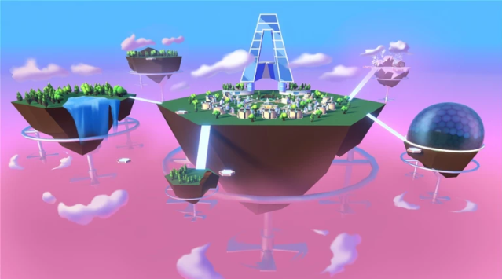
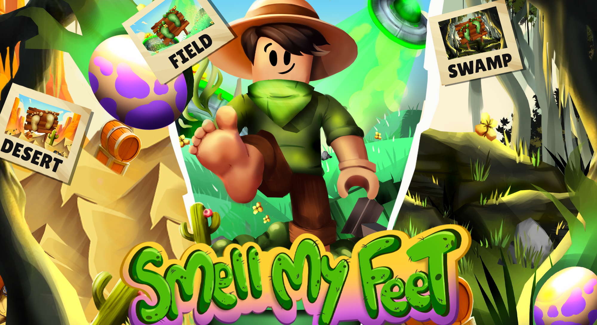
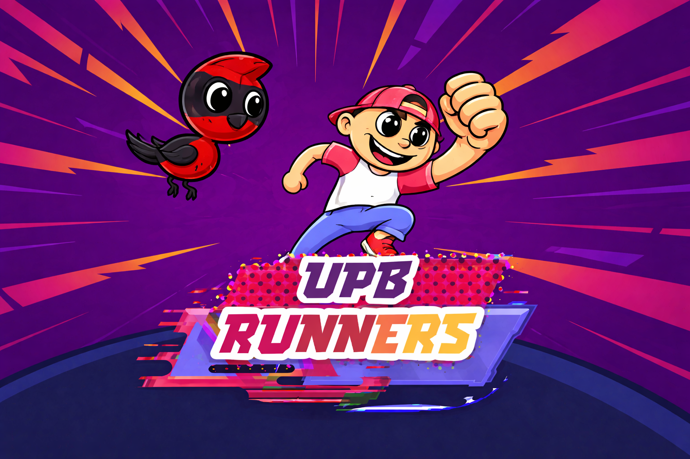
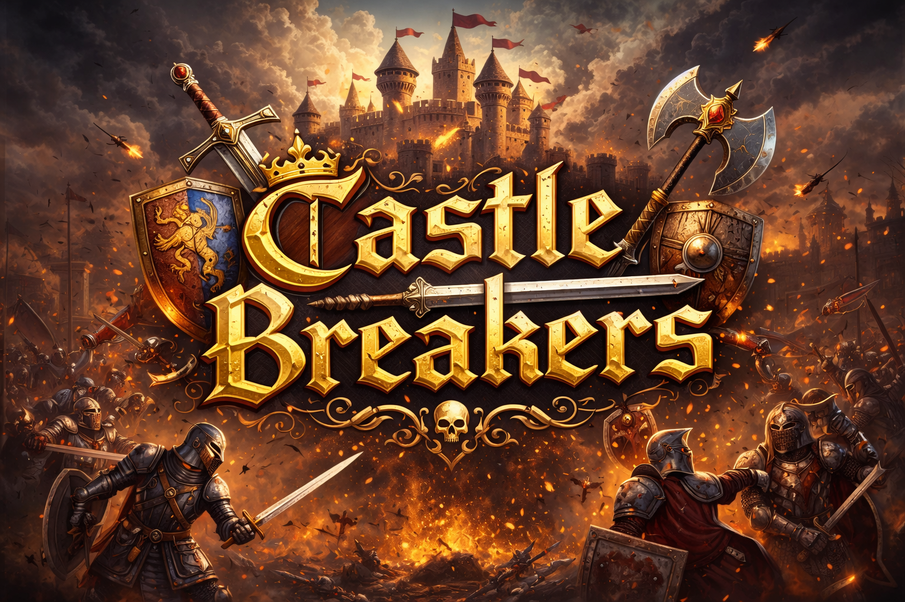
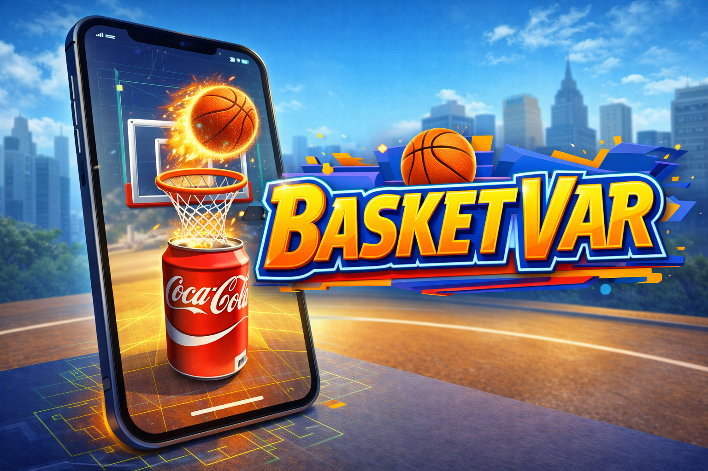

Medellín, Colombia · Open to international roles · English B2
Gameplay Engineer — Systems & Performance
Game Developer with 2+ years of professional experience across Unity, Unreal, Roblox, and UEFN. Specialized in gameplay mechanics, AR/VR, multiplayer systems, physics development, and performance optimization.
Unity (C#)
Unreal (C++)
Roblox (Lua)
UEFN (Verse)
Optimization
Multiplayer
Physics
AR/VR
Featured work
A focused selection of shipped work and production-ready prototypes. Each case study highlights ownership, technical decisions, and measurable impact—written for fast recruiter scanning.




Castle Breakers — Unreal Gameplay Systems
GameplayC++ systems + performance improvements (+20%).

BasketVar — AR Basketball (Unity + Vuforia)
GameplayMobile AR mini-game: use a Coca-Cola can as the hoop target and throw the ball Pokémon Go–style with physics-based tuning

Super Blaq — Arena Wave Combat (Roblox)
SystemsNear-MVP Roblox arena brawler: melee combat with combos, enemy systems, and wave-based encounters built end-to-end.
Skills snapshot
A quick, hiring-oriented view of my strongest areas: gameplay systems, performance-minded implementation, and the languages/tools I use daily to ship features.
Gameplay Programming
- Gameplay mechanics
- Interactive systems
- Multiplayer gameplay
- Physics-driven gameplay
- AR/VR interactions
Performance & Problem Solving
- Optimization
- Profiling mindset
- Resource management
- Debug & iteration
- Code quality
Tech Stack
- C++
- C#
- Lua
- Verse
- JavaScript
- Unity
- Unreal Engine
- Roblox Studio
- UEFN
Journey
A concise timeline of roles and shipped work—from Unity foundations to Unreal/UEFN production—highlighting growth, ownership, and technical depth.
-
Teravision Games
UEFN/Unreal gameplay development in a live production environment. Shipped Fortnite LiveOps work, including Raptor Heist, nominated to the Fortnite Game Awards.
-
Beyond Reality Studio
Built scalable gameplay and UI systems in Lua, focusing on clean reusable patterns, networking, modularity, and improved performance.
-
Dead Monkey S.A.S
Built internal tooling and scripts to improve the UEFN creation/iteration pipeline. Partnered with designers to ship performant gameplay features and maintain strong code quality, consistently meeting project deadlines.
-
Amber Studios
Led engineering on Brandcade: team management, optimization, code quality, and delivery against deadlines.
-
Avenfor
Unreal gameplay systems in C++ with performance improvements (+20%) through optimization and resource management.
-
UPB
Unity 2D gameplay development with an engagement uplift (+25%) on UPB Runners.